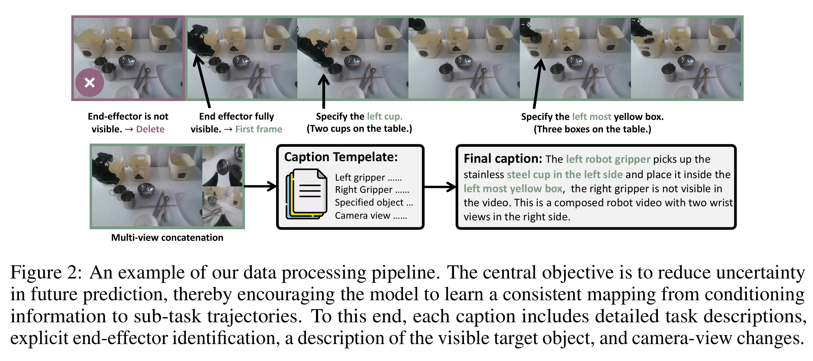
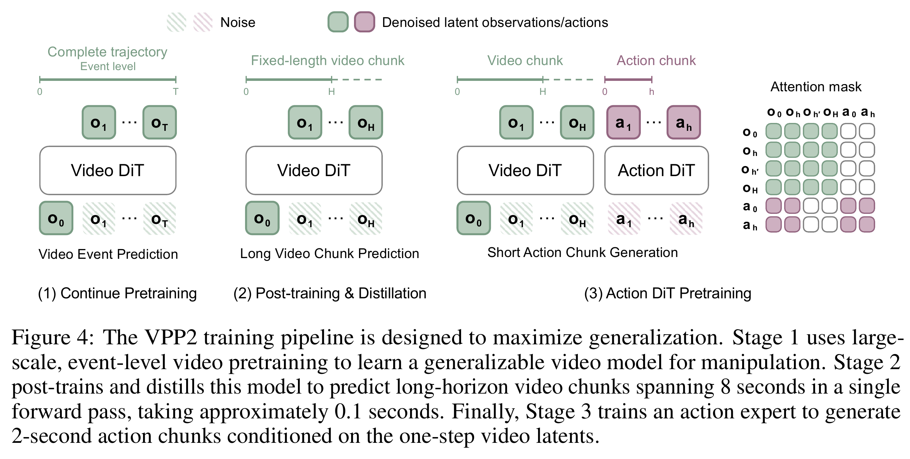
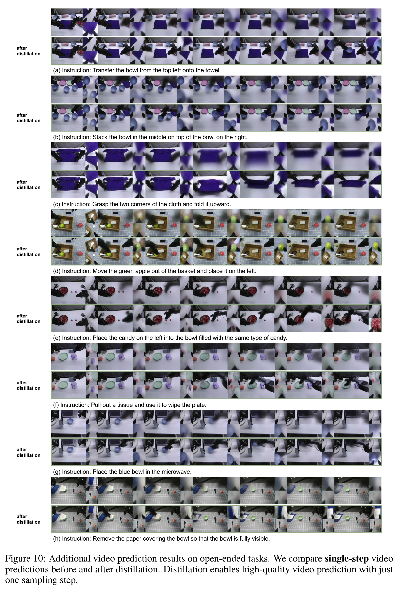
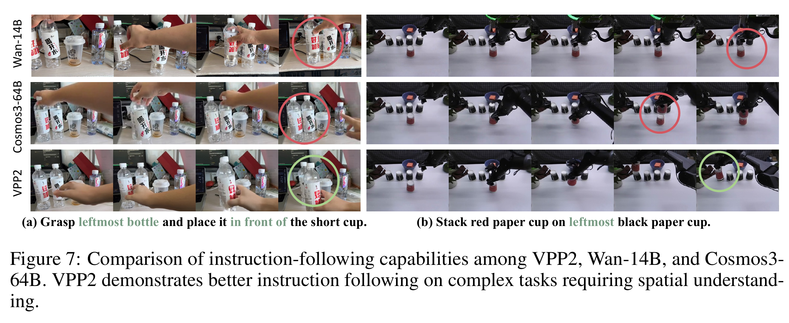
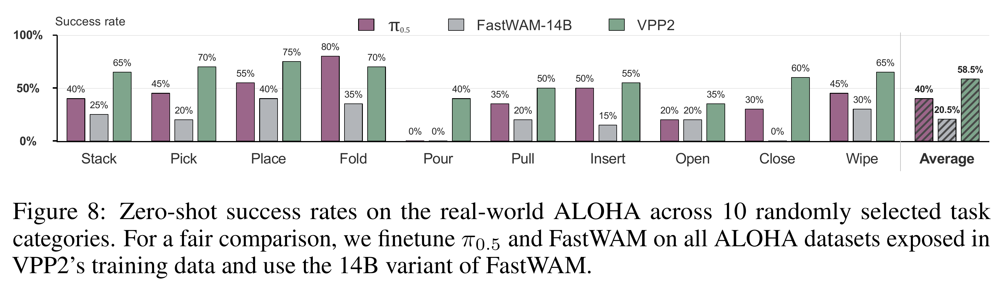
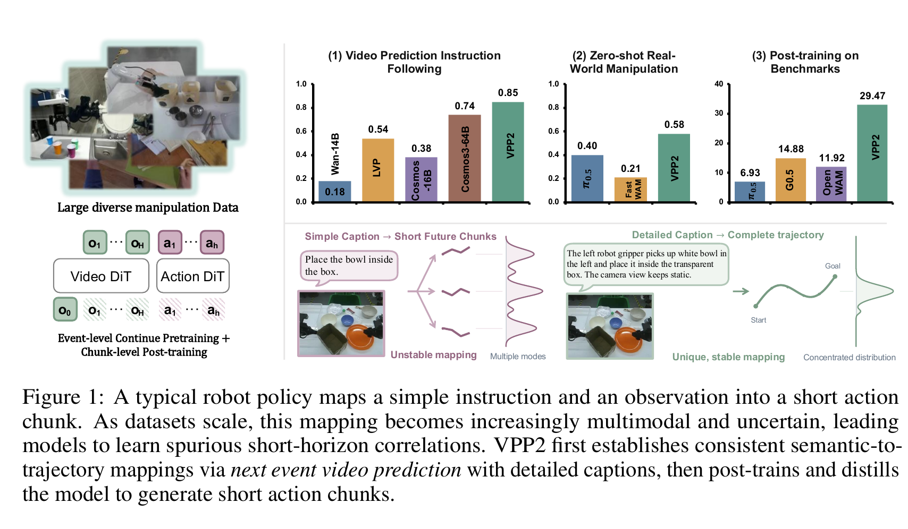
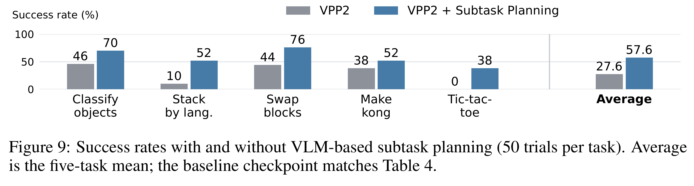

仿真 · 专项后训练
32.26% RoboDojo SR42个双臂任务；score 39.26。Open仅4.08%，不能用平均数概括所有能力。
Video Prediction Policy 2: Predict Better, Act Better
从 Wan 视频底座出发，用完整事件＋详细指令建立语义与运动的对应；再做固定时长预测和单步蒸馏，最后让动作专家读取未来表征。改进不只在“接一个 action head”，还在于它读到的未来是否可信。
VPP2 是世界动作模型（World Action Model, WAM）。它先从通用视频底座学操控领域的未来预测，再把未来表征转成动作。下面先给概念地图；随后解释为什么“视频看起来逼真”仍不够，以及每个训练阶段各补哪一块。
| 论文五问 | 回答 |
|---|---|
| 背景 | 视频生成模型积累了运动与交互先验，能否把这种先验转化为机器人闭环控制能力？ |
| 直接依赖 | Wan2.1-I2V-14B；VPP1 的预测表征／隐式逆动力学；Flow Matching；Consistency Distillation；MoT 多模态专家；VLM 子任务规划。 |
| 具体失败 | 新场景中抓错对象、左右手混淆、任务语义不跟随；接入动作目标还可能破坏已有视频能力。 |
| 作者的押注 | 先通过完整事件与详细 caption 学可靠的语言—轨迹对应，再把它适配成固定时长、单步预测，最后学习动作。 |
| 效果与代价 | 视频指令跟随平均 85%；ALOHA 58.5%；14B 视频骨干＋0.9B 动作专家，论文主线每动作块约 0.22 秒。数据总小时数、完整算力账本未报告。 |
| 最重要边界 | WAM 是利用世界预测先验的策略类别，不必等于“给候选动作、模拟后果、搜索最优动作”的动作条件模拟器。 |
你的直觉可以保留：“预训练视频预测模型，然后接 action”是对的。还要补上：从已有 Wan 继续训练；先对齐语义、再对齐时间并蒸馏；动作读取内部特征／KV，而非必须读取解码后的 RGB。
理解 VPP2 前，先把 VPP1 的信息通路补齐。关键不是生成一段可播放的视频，而是取视频模型内部已经包含未来运动线索的特征；这解释了 VPP2 为什么也不需要 RGB 视频作为动作接口。
| 环节 | VPP1 做什么 | 输入与输出 |
|---|---|---|
| 视频适配 | 以 SVD 1.5B 为底座，加入 CLIP 语言条件，在人类／机器人操控视频上微调。 | 当前观察＋语言＋带噪视频 latent → 操控预测表征 |
| 一次前向 | 部署时从最高噪声附近做一次前向，提取多个上采样层，不等待完整多步视频去噪。 | 多尺度时空特征 → 插值对齐、通道拼接 |
| Video Former | 用可学习 query 先做空间、再做时间聚合，并融合相机视角。 | 高维视频特征 → 固定数量的条件 token |
| 动作学习 | 冻结适配后的视频模型，训练 Video Former 与 DiT diffusion policy。 | 条件 token＋语言＋动作噪声 → action chunk |
“隐式逆动力学”是功能解释：从当前状态和预期未来推断实现变化需要的动作。它没有显式输入两张 RGB 图再求逆，也没有在推理时解一个机器人动力学方程。
VPP1 认为第一次前向的内部特征已够控制使用；VPP2 主线额外进行一致性蒸馏，让一次前向本身也能产生更可靠的未来 latent。这两个“单步”不能混为一谈。
VPP1 给出了“读取未来特征”的接口，但接口本身不保证未来正确。VPP2 把问题追到监督：简短指令对应大量可能轨迹，任意短片段又可能根本没覆盖指令的结果。本节解释如何降低这种歧义；数据规模和去重覆盖仍有公开信息缺口。
例如“把杯子放进盒子”：前一秒可能只发生机械臂靠近。若监督仅覆盖这一秒，模型很难把“进盒子”与完整视觉结果对应起来。VPP2 先切出 1–12 秒、语义连贯的子任务，跨整个事件采样未来帧。
详细 caption 同时交代：操作过程、哪只末端、哪个目标、相机视角与运动。末端或目标必须在初始帧可见；对剧烈视角变化的视频进行过滤。类比教学时先给学生完整演示，再训练某段动作的速度与节奏。

| 数据来源 | 模态／采集 | 用途／规模边界 |
|---|---|---|
| 机器人 | 单臂 OXE、RoboMIND、DROID、RH20T、MolmoAct；双臂 AgiBot、RoboCOIN、RDT、GM-100、ABC-130K、自采 ALOHA；移动／人形 InternData-A1、Galaxea、自采灵巧手。 | 视频继续预训练；经统一处理的双臂数据用于动作预训练。各数据集实际采样数／小时数未报告。 |
| 人类 | EgoDex、Ego4D、EPIC-KITCHENS、Something-Something V2、VITRA-1M、自采第一视角。 | 用于操控视频学习；动作阶段只可使用具备相应表示、经统一处理的数据，不能假定所有人类视频都有机器人动作标签。 |
| 通用视频 | OpenVid、Panda-70M，筛选保留操控相关活动。 | 数据集名字中的规模不是 VPP2 实际使用规模。 |
| 视频评测 | 人手、机器人各 50 个图像—指令对；来自既有工作和新拍摄办公室／工作空间。 | GPT 评估指令成功，另有人类偏好比较；不等于真机执行。 |
| 仿真后训练 | 标准 LIBERO 四套；RoboDojo 专项示范。 | 官方 LIBERO 文档：1,712 条示范／277,713 帧；RoboDojo：视频用全部 3,500 条，joint 阶段 3,466／34 划分。后者 34 条并非视频阶段完全未见。 |
论文主线把主视角放左边、两路辅助视角上下叠在右边；缺失视角以黑图补齐。跨双臂机器人不仅统一动作维度，还分别对齐工作空间坐标和末端坐标，否则视觉上的“向左”可能在不同数据集对应不同动作轴。
不需要。完整事件是训练目标视频。条件仍是当前观察与指令；测试时未来未知，由模型预测。之后 Stage 2 还会把预测时间范围改成固定长度。
数据减少了“要做什么”的歧义，还要解决“多久内做完”和“如何输出控制量”。以下原图把三个训练阶段连起来；动作专家读的是视频内部表征。这里讲论文通用真机主线，后文单独列出 benchmark 专项配方。

从当前观察、详细子任务文本和噪声出发，预测从起点到任务完成的视觉演化。Stage 1 训练 49 帧、416×240，30k 步，batch 1024，学习率 1e−5。每次覆盖一个事件，但帧间真实时间随事件长度变化。
Stage 2 将训练目标改成固定时长：机器人 8 秒、人手 2 秒。再用一致性蒸馏将多步教师的预测能力压进单次前向。后训练视频输入降低为 17×416×240。预测窗口与 action chunk 的时长不是同一概念。
主线加入 0.9B Action DiT，以视频模型 KV cache 为条件训练隐式逆动力学。早期冻结视频基础参数、仅 LoRA 适配视频骨干；动作从噪声迭代生成 2 秒动作块。不是全程彻底冻结，也不是把解码 RGB 再输入视觉编码器。
图右的 mask 让视频 token 读取视频，不读取动作；动作读取允许的视频前缀与动作 token。视频内部是双向注意力，因此不能把“动作直接读取部分视频 token”误写为“其余未来完全不能间接影响动作”。原图没有给出所有实现索引，LIBERO 文档补充为 5 个视频 latent 中直接读取前 3 个。
“freeze the base parameters”
推理预算：论文报告视频单步约 0.12 秒，动作五步去噪约 0.10 秒，总计约 0.22 秒／动作块，使用 bfloat16 与 torch.compile。这个数字不是控制频率，也不包含一个已经明确对齐的 VLM 高层规划总耗时。论文未在该段给出可复核的硬件与完整计时边界。

三阶段的职责已经明确。下面把采样时间、视频流匹配、蒸馏和坐标对齐拆开：这些公式解决不同问题，不要把真实时间、噪声时间和动作时间混成一个 t。所有数字算例均为解释用，非论文实验。
输入是一段事件轨迹，输出是包含初始帧与 N 个未来帧的训练视频。RGB 可记为 (N+1)×3×H×W；编码后的 latent 为 Tᶻ×Cᶻ×Hᶻ×Wᶻ，具体压缩维度依赖 VAE。
T 是事件最后一帧的索引，N 不含初始帧。若 T=120、N=4，采样索引为 0、30、60、90、120；若事件变成 240 帧，间隔也变成 60 帧。两段视频的语义都完整，时间尺度却不同。
先把真实视频压成 x₁，再混入同形状高斯噪声 ε。条件 c 包含当前观察与子任务指令；网络输出与 x₁ 同形状的速度场。
s 是无量纲的流时间：s=0 为噪声，s=1 为数据，与真实视频的第几秒无关。这也与某些代码以 1000 表示最大噪声的 convention 相反。
f 的单位是帧／秒，H 是预测秒数，δ 是原数据帧数。取 f=20、H=8、N=16，δ=10：每 0.5 秒取一帧，总共初始帧＋16 个未来帧。换一个事件长度，采样时间尺度仍不变；越过轨迹尾端的索引截到最后一帧。
冻结的教师把 xₛ 推进到较干净的 x̂ₛ′；EMA 学生 Fθ̄ 给出终点目标，sg 表示不对目标反向传播。λ 是权重。论文以 0.5 概率取 s′=1 来强调单步生成。部署输出 Fθ(ε,0,c)，而不是沿完整轨迹迭代很多步。
Td、Ad、Bd 均为 4×4 齐次变换。左乘 Ad 把数据集工作空间换成统一世界坐标，右乘 Bd 把原末端坐标换成统一末端坐标。旋转时乘法顺序不可交换。
前面解释了 VPP2 如何获得未来表征。现在用同一个“把左边杯子放进盒子”的任务比较：分叉发生在动作 token 能否读取未来视频 token，而不是有没有使用 Wan 或 Action DiT。
| 维度 | VPP1 | VPP2 论文主线 | FastWAM 原论文 |
|---|---|---|---|
| 底座 | SVD 1.5B | Wan2.1-I2V-14B | Wan2.2-5B |
| 动作接口 | Video Former → diffusion policy | 视频／动作 MoT，读视频 KV | 视频／动作 MoT，读当前帧 KV |
| 推理未来 token | 保留，第一次前向抽特征 | 保留，蒸馏后单步预测 | 删除未来视频 token |
| 动作读取未来 | 能，经聚合表征 | 能，遵循结构化 mask | 不能；训练时也隔开 |
| 如何加速 | 不完整去噪 RGB | 把视频生成蒸馏到单步 | 推理时省去未来预测 |
| 视频训练价值 | 预测性视觉特征 | 可靠的指令条件未来＋控制 | 视频 co-training 改善当前上下文表征 |
同例推演：VPP2 根据指令形成“左杯移动到盒内”的未来表征，动作专家据此生成控制。FastWAM 训练时另有未来视频预测任务，但动作分支只看当前帧条件；部署不创建未来 token。因此，二者不是简单把同一组件换个名字。
知道机制后，先检验视频模型是否确实更听指令。完整事件版本明显优于固定时长训练变体，但这个实验仍不能单独隔离所有 caption、数据与优化因素；更不能用视频成功率代替机器人控制成功率。
| 视频预测模型 | 人手 50 对 | 机器人 50 对 | 两类均值 |
|---|---|---|---|
| Wan2.1-14B | 32% | 4% | 18% |
| LVP | 62% | 46% | 54% |
| Cosmos3-16B | 44% | 32% | 38% |
| Cosmos3-64B | 70% | 78% | 74% |
| VPP2-Fixed-Step | 48% | 42% | 45% |
| VPP2 | 80% | 90% | 85% |
两类各 50 个案例，采用 GPT 评估指令跟随，另由人类做成对偏好比较。85% 对 74% 是 +11 个百分点，不是相对提升 11%。完整事件对 Fixed-Step 的人手／机器人分别 +32／+48 个百分点。

支持“本文训练配方下，完整事件目标比固定短窗更利于指令跟随”；没有充分隔离详细 caption 的独立增益，也没有证明单步蒸馏和动作接入之后始终保留完全相同的 85% 视频分数。
视频评测只验证中间能力。下面回到闭环控制，并把不同协议分开。首屏已经给关键结论；标签切换用于查细节，不把所有 OOD 压成一个“泛化”数字。主文缺失字段只在官方实现明确给出时补充。
| Benchmark／版本 | 任务／训练→测试 | 观察／动作 | 控制／试验量 | 结果与对照 | 证据 |
|---|---|---|---|---|---|
| LIBERO-ID | 四个标准 suite，仅在其示范上后训练；公开实现 40 个任务。 | 论文通用描述；实现：主／腕 RGB 水平拼接、语言、本体状态；动作 [32,7]。 | 实现 40×50 初始状态＝2,000 episodes；Hz 与成功判定具体细则主文未列。 | 98.8%（实现1,976/2,000）；π0.5 96.9%，+1.9 pp；DiT4DiT 98.6%，+0.2 pp。 | Table 3 p.8；Table 6 p.20；docs/libero.md |
| LIBERO-Pro | 只在标准四套训练；测试 Position / Task 两种变化。 | 同一 LIBERO policy；无额外 OOD 训练。 | 实现 40×2×10＝800 episodes，direct policy，无 planner／外部记忆工具。 | 45.0%（实现360/800）；表中最强整体基线 π0.5 11.0%，+34.0 pp。 | Table 3 p.8；docs/libero.md |
| LIBERO-OOD | 熟悉对象、布局与目标的新组合；Spatial / Object / Goal。 | 同一 LIBERO policy；环境与 reset 不同于 ID。 | 实现 30×3 seed IDs×50 resets＝4,500 episodes。 | 63.9%（实现2,877/4,500）；Temporal Ratio 59.4%，+4.5 pp。实现精确值 63.93%。 | Table 3 p.8；docs/libero.md |
| RoboDojo-Sim | 42 个双臂任务，五类能力；benchmark 专项后训练。 | 实现：首帧＋7个过去观察＋当前帧；Video＋Action2B；本体状态。 | 实现 action horizon 32／execute 24，history 8／stride 25，10 Euler 步，eval seed 1。泛化 standard/random 各25 episodes；其余完整次数主文未逐项列出。 | 平均 score 39.26；成功率 32.26%。表中 GPT-6-Astra 22.48%，差 +9.78 pp；各基线来自官方榜单，非同一受控重跑。 | Table 4 p.9；Tables 7–8 pp.20–21；docs/robodojo.md |
| 维度／设置 | 训练分布与测试变化 | ID 参照 | OOD 绝对值 | 下降／保留率 | 证据 |
|---|---|---|---|---|---|
| LIBERO-Pro · Position | 标准示范 → 物体位置扰动 | 总体 98.8%；非匹配逐任务对照 | 42.3% | 不可直接比较 | Table 3 p.8 |
| LIBERO-Pro · Task | 标准示范 → 任务要求扰动 | 同左 | 47.8% | 不可直接比较 | Table 3 p.8 |
| LIBERO-OOD · Spatial | 熟悉元素 → 新空间组合 | 同左 | 59.3% | 不可直接比较 | Table 3 p.8 |
| LIBERO-OOD · Object | 熟悉对象在新配置中组合；不等于全新物体类别 | 同左 | 44.5% | 不可直接比较 | Table 3 p.8 |
| LIBERO-OOD · Goal | 熟悉技能 → 新目标组合 | 同左 | 87.7% | 不可直接比较 | Table 3 p.8 |
| RoboDojo · Generalization | 背景／光照／干扰物／目标变化 | VPP2 standard 未单独给出 | standard＋random 合并 29.50% | 无法拆分随机化下降 | Table 8 p.21 |
| RoboDojo · Open | 已见技能在不同上下文 → 未见任务规格 | 匹配 ID 未报告 | 4.08% | 不可计算 | Table 8 p.21 |
| 语言表达改写／相机内参 | 本文未给独立受控维度实验 | 未报告 | 未报告 | 不可计算 | 证据缺口 |
| 动力学／摩擦／载荷／外力／延迟 | 本文未给独立受控维度实验 | 未报告 | 未报告 | 不可计算 | 证据缺口 |
| 新机器人 embodiment | 视频有未见形态定性例子；真机部署形态训练见过 | 未报告 | 闭环新形态数值未报告 | 不可计算 | §4.1–4.2 pp.6–7 |
| 平台／传感器 | 任务／变化 | 成功数／总次数 | 成功率／区间 | 适配与闭环 | 时间／干预／失败 |
|---|---|---|---|---|---|
| ALOHA 双臂夹爪；多视角视觉；该实验传感器规格未完整列出 | 10 类开放任务，训练见过机器人形态，任务无需专项微调 | 未报告／未报告；不能由5%粒度倒推每类20次 | VPP2 58.5%，π0.5 40.0%，FastWAM-14B 20.5%；试验数未报告，无法计算区间 | 真实机器人执行；π0.5／FastWAM 用 VPP2 所用 ALOHA 数据适配；这不是所有预训练资源一致的对照 | 完成时间、人工干预／安全停止次数未报告；失败未分类。Fold 为 VPP2 70% 对 π0.5 80%。 |
| 任务类别 | VPP2 | π0.5 | FastWAM-14B | 成功数／试验数 |
|---|---|---|---|---|
| Stack | 65% | 40% | 25% | 未报告／未报告 |
| Pick | 70% | 45% | 20% | 未报告／未报告 |
| Place | 75% | 55% | 40% | 未报告／未报告 |
| Fold | 70% | 80% | 35% | 未报告／未报告 |
| Pour | 40% | 0% | 0% | 未报告／未报告 |
| Pull | 50% | 35% | 20% | 未报告／未报告 |
| Insert | 55% | 50% | 15% | 未报告／未报告 |
| Open | 35% | 20% | 20% | 未报告／未报告 |
| Close | 60% | 30% | 0% | 未报告／未报告 |
| Wipe | 65% | 45% | 30% | 未报告／未报告 |

“without task-specific fine-tuning”
| LIBERO suite | Spatial | Object | Goal | Long | 平均 |
|---|---|---|---|---|---|
| VPP2 | 99.2 | 99.8 | 98.2 | 98.0 | 98.8 |
| π0.5 | 98.8 | 99.2 | 98.0 | 92.4 | 96.9 |
| RoboDojo 能力 | Generalization（合并） | Precision | Long-Horizon | Memory | Open | 平均 |
|---|---|---|---|---|---|---|
| VPP2 Score | 36.39 | 43.03 | 56.28 | 56.01 | 4.61 | 39.26 |
| VPP2 SR % | 29.50 | 35.17 | 37.00 | 55.56 | 4.08 | 32.26 |
RoboDojo 总体提升显著，但 Open 成功率只有 4.08%，Memory 则为 55.56%。不能把总体 32.26% 读成“开放语言任务已经解决”。LIBERO-ID 98.8% 也不能替代组合 OOD 的结论。
同名 VPP2 下的训练分支不完全一致。你给的作者评论解释了 RoboDojo 为什么从蒸馏前重新开始；公开文档还显示 LIBERO 的视频冻结与输入拼接也不同。这里保留差异，不替作者把它们拼成一个统一配置。
| 项目 | 论文通用主线 | 公开 RoboDojo | 公开 LIBERO |
|---|---|---|---|
| 初始化／阶段 | 事件预训练 → 固定窗＋蒸馏 → 动作预训练 | 蒸馏前 Stage 2 → 历史条件 Video-10k → joint 100k | 专门 prior robot-video step-28k → Video-10k → Action-30k；文档称精确初始模型／数据仍待发布 |
| 动作专家 | 0.9B | Action2B | 约1B；hidden 512 / FFN 2048 |
| 视频参数训练 | 动作早期冻结基础参数，仅 LoRA 适配视频 | joint 阶段视频与动作一起训练 | 动作阶段整个视频专家、VAE、CLIP、文本编码器冻结 |
| 视觉输入 | T-shaped 多视角；后训练 17×416×240 | 首帧＋7段过去观察＋当前＋16未来＝25 RGB帧／7 latent；240×416 | 头／腕横拼 [3,17,224,448]；5 latent，动作直接看前3个 |
| 推理 | 蒸馏视频单步；动作5步；2秒动作块 | 视频缓存一次；动作10 Euler步；horizon32／execute24 | 最大噪声 timestep1000 一次视频前向，缓存 frozen KV；动作 [32,7] |
| 为什么不能混用 | 这是说明通用模型训练的主线 | 历史输入改变了结构与训练起点 | benchmark 文档的 Stage1/2 是局部视频／动作阶段，不是论文三阶段的同名编号 |
模型把当前条件与纯噪声未来 latent 一起处理，产生供动作分支读取的内部特征。动作专家可以学会利用这种固定噪声级别的特征。一次前向可用于动作条件，不自动意味着它是高质量的一步视频生成器。这与 VPP1 的表征思路相通；不要把“单次取特征”写成“已经做过一致性蒸馏”。

| 来源差异 | 页面如何处理 |
|---|---|
| PDF 首页 Figure 1 的 RoboDojo 柱图为29.47，正文 Table4 / Appendix Table8 为32.26。 | 并列记录；摘要评测采用正文／附录一致的32.26，不猜版本变更原因。 |
| 截图主张 WAM 应保留低层响应；公开 RoboDojo 仍联合训练 Video＋Action。 | 作者是在讨论如何保护泛化，不等于禁止所有 joint training。意见与具体实现分开。 |
| 主文真机对照描述“相同数据”，图8具体为对基线在全部相关 ALOHA 数据上微调。 | 只认定 ALOHA 适配数据对齐；不声称视频预训练、人类数据、算力与 caption 管线全面一致。 |
| 公开仿真协议补充了主文未列出的 reset、episode预算。 | 标为实现证据；历史榜单 baseline 是否都逐项相同未被证明。 |
| 视频训练后动作能力、视频能力是否在同一 checkpoint 成对评估？ | 没有完整逐阶段受控矩阵；不把视频85%与所有策略分支绑定。 |
模型主线已经清楚，最后放回作者讨论的语境。作者提出让高层模型负责规划、WAM负责细节控制；论文有局部实验支持这种分工的可用性，但没有证明所有智能必须采用它。
VLM 将模糊或长任务拆成明确子任务，同时按训练 caption 模板补充目标、末端和视角信息。高层像编排步骤，底层像执行具体动作；类比有助理解，实际系统仍需要观察反馈与错误恢复。

| 选定任务组 | VPP2 | ＋Subtask Planning | 增益 |
|---|---|---|---|
| 物体分类 | 46% | 70% | 24 pp |
| 按语言堆块 | 10% | 52% | 42 pp |
| 交换积木 | 44% | 76% | 32 pp |
| 麻将杠牌 | 38% | 52% | 14 pp |
| 井字棋 | 0% | 38% | 38 pp |
| 五组均值 | 27.6% | 57.6% | 30 pp |
| 作者截图中的观点 | 证据解读 |
|---|---|
| 视频不泛化，动作一定不对。 | 对依赖未来表征的策略是合理风险提示；作为所有WAM的必要条件则过强。FastWAM直接检验另一条路线。 |
| 不要从头做WAM预训练。 | VPP2确实从Wan权重继续预训练，不是从随机参数开始；它并没有省去大规模操控领域训练。 |
| 高成功率部署仍由域内后训练数据决定。 | 属于经验判断。本文的benchmark专项配方体现数据适配重要，但没有完整控制变量实验量化“数据比架构重要多少”。 |
| LLM负责记忆／推理，WAM只做快速响应。 | 属于未来架构观点。五任务规划增益是局部支持，不能推出唯一终局。 |
| 相同数据训练VLA和WAM谁强？ | 作者截图承认尚未完全对齐比较；论文ALOHA适配对照不能替代全部训练资源受控实验。 |
方法与结果之间需要逐条对应。以下将主张、机制、证据和替代解释放在一起；这样不会把多个阶段、数据来源和评测协议的收益都归到一个架构改动上。
| Claim | Mechanism | Evidence | Boundary |
|---|---|---|---|
| 操控视频更听指令 | 完整事件＋详细caption＋操控领域继续预训练 | Table2：85 vs74；Fixed-Step45 | 100个图像—指令对，自动评估＋人类偏好；无完整多因素消融。 |
| 未来先验能帮助实际控制 | 视频KV → 动作专家／隐式IDM | ALOHA58.5 vs40.0/20.5 | 试验计数、方差、失败类型缺失；训练见过形态。 |
| 组合泛化强于多数对照 | 语义对齐训练与专项后训练 | LIBERO-Pro45，OOD63.9 | 基线来源混合，所有训练资源与初始化未全面对齐。 |
| 快速推理可行 | 单步视频＋短动作块 | 主线0.22秒/块 | 不同模型分支、硬件、VLM耗时、异步执行不能混算。 |
| 高层规划有帮助 | VLM拆子任务、增强prompt | 五任务均值27.6→57.6 | 还包含子任务条件训练；非全42任务、非唯一架构证明。 |
可支持的最强结论：在论文报告的操控视频、已见ALOHA形态的零任务微调测试、以及LIBERO和RoboDojo专项协议上，这套“强化视频先验、再学习动作”的配方取得更好结果。视频与控制都有证据，但其因果归因尚不完整。
暂时不能支持：WAM普遍优于VLA；只换MoT架构就能获得同等收益；视频预测正确充分保证接触控制成功；对任意新机器人、新动力学或任意开放指令都可靠；仿真成绩证明通用sim-to-real迁移。
值得补的受控实验（读者建议）：固定视频初始化、动作数据、caption、训练预算与部署时延，再分别开关事件级训练、蒸馏、未来token可见性和视频参数更新。这样才能分清“视频预训练更好”与“测试时真的需要未来预测”。
2026-10-23 复核完整 21 页 PDF：VPP2 的事件视频先验、未来条件与动作专家可作为高层策略参考，但本文主要操控证据不能直接外推成人形全身控制。若动作改成 SONIC token，必须重新定义时间窗口、状态输入、目标 controller 与监督标签。
保留四条边界：大规模训练的总小时数未在本版充分披露；ALOHA 的零目标任务微调不等于未见本体；58.5% 缺完整 trial 数，不能倒推样本量；0.22 s 的部署硬件说明不足，不能与 Fast-WAM 的 RTX 5090 190 ms 作严格速度排名。
“保护视频先验”是训练设计目标；早期冻结、LoRA 与后续训练阶段要分别看，不应写成 backbone 全程完全冻结。五任务高层规划实验的 27.6→57.6 也不是所有 RoboDojo 任务的统一增益。
读完整篇后，把它放回你熟悉的VLA框架：动作专家并不新奇，新的问题是条件信息从哪里来、如何训练、如何保护。理解这点比记住模型名字更有用。
如果以 π₀ 类动作专家为参照，VPP2 的不同主要在于条件骨干提供任务条件下的未来视觉演化，而不只是当前图像与语言语义。MoT 是接口，视频训练配方决定接口里究竟有没有可泛化的信息。
对研究选题，更具体的问题是：在同一套视频先验上，保留单步未来表征能否比 FastWAM 的纯当前帧接口更稳定地处理目标组合变化？若优势只出现在特定时间跨度或接触阶段，才有可解释的方法空间。